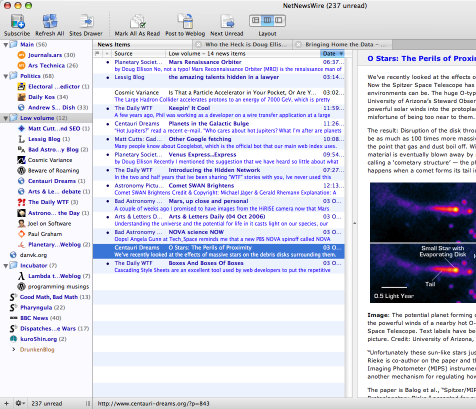
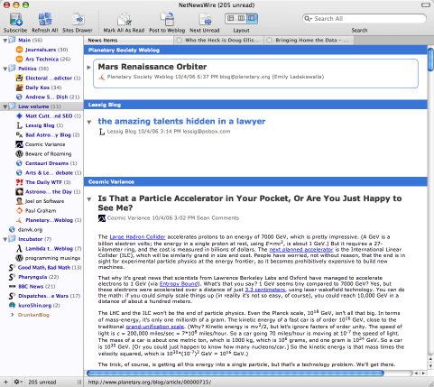
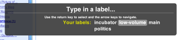
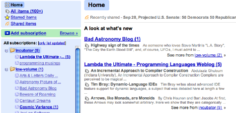

11.27.06
Posted in music, reviews at 10:03 pm by danvk
Go check out Pitchfork’s 200 Greatest Songs of the 1960s. I always wished they’d do a Sixties album list in the same style as their 1970′s, 1980′s, 1990′s and 2000-04 lists. That won’t happen now, but a Singles list is a pretty good consolation prize. I already knew a fair number of the songs on the list, and I suspect that anyone else who went to High School in the English-speaking world can say the same.
Here’s my initial take on the top 21. Eight of them were new to me. If you want to listen to any of them legally, iTunes will have most, and the Pitchfork version of the list has info on what CDs to buy. If you lack scruples, you can just get in touch with me.
21. Beach Boys / Good Vibrations (1966)
Lots of fun, and everyone’s heard it. Not everyone knows the story, though. Beatles release Revolver. Beach Boys one-up with Pet Sounds. Beatles one-up with Sgt. Pepper. Beach Boys prepare to one-up that, and this will be the smash single. But then Brian Wilson loses his mind while recording it.
20. The Shangri-Las / Out in the Streets (1965) – new to me
This song sounds wonderful, and the story is edgy enough to make me buy a placement this high. How many songs like this feature a girl singing about how she needs to break up with her boy so he can be a bad guy in a gang again? Very cool.
19. Tomorrow Never Knows / The Beatles (1966)
I always liked this song, even before I liked The Beatles. It’s so exotic, so different, but not in an academic, unlistenable way like a 15-minute long “single” by Steve Reich elsewhere on the list…
18. Then He Kissed Me / The Crystals (1963) – new to me
This song is super-sweet, and it’s fine, but I don’t understand why it’s ranked so highly. There’s only the slightest hint of anything outside a cookie-cutter life here (“and then he kissed me in a way that I’d never been kissed before”). Instead of taking her to his home to MEET his parents, couldn’t they do that when the parents aren’t around? Be just a little edgy, please!
17. Fortunate Son / CCR (1969)
“I ain’t no Senator’s Son!” What a hook, what a song. I wish we had protest songs this tight and scathing now, not John Mayer singing this crap about waiting for the world to change.
16. I Wanna Be your Dog / The Stooges (1969) – new to me
I guess the song is OK, it’s just the “1969″ that sticks out at me. This sounds like something from the eighties. It reminds me a little bit of Sonic Youth.
15. Think / Aretha Franklin (1968)
“Freedom,” that’s the chorus that gets sampled all over the place. But thinking’s a good idea too. Can’t argue with that, Aretha.
14. Don’t Worry Baby / The Beach Boys (1964) – new to me
This is cool, and it makes me want to listen to more Beach Boys beyond Pet Sounds and “Good Vibrations”. It’s a fun love song, but it’s got a cool gender-role reversal thing going on. The guy is pretty submissive and insecure here, but his girl’s got all the answers. The car line is priceless: “I guess I shoulda kept my mouth shut when I start to brag about my car. But I can’t back down now because I pushed the other guys too far.”
13. The Weight / The Band (1968)
I knew the opening bit from a commercial. Having listened to the rest of the song, they chose the right part to sample. I’ve had “Southern Rock Bad” pounded into me just a bit too hard to enjoy this on its own terms.
12. Gimme Shelter / The Rolling Stones (1969)
Here’s one that really jumps out at you. It sure jumped out at me the first time I heard it as a freshman riding to school way back in the day. Go look at the picture of the Stones on Pitchfork. GOD he’s got a big mouth.
11. Dazed and Confused / Led Zeppelin (1969)
Ah Zeppelin. I don’t know that I would have chosen this as their best single of the 1960′s, but it’s certainly up there. Honestly, how many people can scream “The soul of a woman was creaaated belooooooooooooooow” to an audience of millions and still get as much action as Robert Plant? Now that I think about it, this song is pretty awesome. I can’t complain.
10. Israelites / Desmond Dekker (1969) – new to me
I’ve never liked Reggae much, so I guess this song is Great in that it helped start a genre, but I’m not so convinced it’s a great song.
9. I Can’t Explain / The Who (1965)
Yeah, this is solid. It’s The Who, it sounds like The Who, and The Who Are Cool.
8. Folsom Prison Blues (Live at Folsom Prison) / Johnny Cash (1968)
I’m so sick of Johnny Cash. Cool setting, cool song, sure, but I skip this one.
7. Wouldn’t it Be Nice / The Beach Boys (1966)
This song might be my #1. It’s certainly my favorite Beach Boys song. Anyone who dated in High School will be able to relate instantly. This was the song that sold me on Pet Sounds and made it one of my favorite albums.
6. Be My Baby / The Ronettes (1963) – new to me
Oh fine. I’ll be your baby if it’s really that important to you. This song is super-sweet, but w/o Pitchfork’s description I wouldn’t have known the technological/music history reason that it was ranked so highly. According to them, it’s the first single that was impossible to reproduce outside of the studio. Meh.
5. A Day in the Life / The Beatles (1967)
I’ve never understood the Best Beatles Song Ever label that it often gets. I’d rate Tomorrow Never Knows higher than this. That being said, it’s a good and tremendously interesting song. It has an incredible sense of resignation all about it.
4. Like a Rolling Stone / Bob Dylan (1965)
The sound of someone “kicking open the door to your mind.” I always worry that people feel obliged to pay lip service to Bob, so I’m skeptical of all such airy statements. Go listen to it yourself. It’s an incredible song that should send chills down the spine of anyone who’s recently moved out into the real world. (note: Google is not the real world). Bob looks so young in the Pitchfork picture.
3. A Change Is Gonna Come / Sam Cooke (1964) – new to me
“Ah was bawwwwn by the rivuh…” This was the real winner of the list for me, the most fantastic song that I would never have found on my own. No white man has ever had a voice so incredible as Sam Cooke’s. I’m almost embarassed to sing along. The song is filled with depressing anecdotes, but it always gets back to that chorus, that a change gonna come.
2. I Want You Back / The Jackson 5 (1969)
I’m so happy that PItchfork made this #2. Who doesn’t love this song? What scares me is that MJ must have been around my little nephew’s age when he first sang this. What’s that like to be outclassed by a ten year-old?
1. God only Knows / The Beach Boys (1966)
“The world could show nothing to me, so what good would living do me? God only knows what I’d be without you.” I think Pitchfork is picking this song because it hits so many Sixties themes. It’s the sweet sort of love song that seems typical of the early 60′s. But as they say, it’s a song riddled with anxiety and dependance. Having the “Wouldn’t it Be Nice” feeling is most certainly a good thing, but you don’t want to feel like “God only Knows,” and in that way, I suppose it’s a more nuanced song than #7. But if anxiety’s what they want, where’s “Caroline No”? I love this song, but I wouldn’t put it at number one. I like numbers 2, 3 and 4 better right now, but this choice may very well grow on me.
Permalink
11.03.06
Posted in books, reviews at 10:00 pm by danvk
 I found this review of Tom Wolfe’s The Right Stuff from the start of this summer. It’s interesting for me to read this, because my attitudes toward manned space travel have evidently changed dramatically in the past six months. More on that in the review of my next book.
I found this review of Tom Wolfe’s The Right Stuff from the start of this summer. It’s interesting for me to read this, because my attitudes toward manned space travel have evidently changed dramatically in the past six months. More on that in the review of my next book.
I finished reading Tom Wolfe’s The Right Stuff this afternoon, and I was completely blown away. I may very well be a sucker for anything space-related (I did read every book on it at the local library), but this book was different. It made me feel as though every other book I’d read on the space program was an historical artifact, something that reflected the opinions and attitudes of its time towards the space program. But Tom Wolfe was cutting right to the quick. He was exposing the rest of the press for what they were.. the “Victorian gent,” as he likes to call them, throwing the astronauts softballs in order to portray them as national heroes.
The really shocking things that came out of this book is just how easily the whole space program could have been different, and just how much power the media had over it all. It wasn’t clear at all in 1959/1960 whether the Mercury program was the place to be. The test pilots weren’t sure if the space program was just a path to glory, or a complete dead end. The X-15 program looked much more promising at first. But what really shifted things was the first three successful Mercury flights.. Shepherd, Grissom, Glenn. When the press turned the astronauts into national heros, there was no backing down from this route to space exploration. And the X-20 program, which would have sent piloted craft into orbit, was scratched. Scratched to the point that I’d never even HEARD of it.
The bits of the book where he talked about the chimps were absolutely fantastic. A very Tom Wolfe tone.
I wished that the book had continued past the Mercury program. It would have been completely appropriate for it to go until the end of the Apollo program, when the infamous budget cuts came around. I would have loved to hear Tom Wolfe’s take on that part of the whole space story. A little followup on what happened to the characters, too. I checked them all out on Wikipedia… most satisfying: Deke Slayton finally got to fly in space in 1975, Pete Conrad walked on the moon (Apollo 12), and so did Alan Shepherd (Apollo 14).
I’ve had about as much Tom Wolfe as I can take for at least the next month, but I’d love to read something else by him in the future.
Permalink
10.24.06
Posted in reviews at 9:58 pm by danvk
On the off chance that you find out about it from danvk.org, the Mozilla Foundation has released Firefox 2.0, and you should go get it.
I’ll admit, I’m not exactly excited about Firefox 2.0. None of the new features are earth-shattering. The ones I’m most excited about are corrections of idiotic behavior that should have never happened in Firefox 1.5 to begin with.
- Spellchecking
Or rather, “spell checking,” as Firefox suggests. Some other words I was surprised not to find in the FF dictionary: ‘toolbar’, ‘firefox’ (!) and ‘frontmost’. It’s a cool feature, but I’ve been using Camino for the past few weeks, so it’s nothing new.
- RSS
The “live bookmarks” feature has always been stupid, but now FF is less insistent that you use it. I’ve trained myself to never click the orange feed icon in the location bar. It got mapped to NetNewsWire on my Macbook, and FF 1.5 offered no clear way to unmap it. I use Google Reader now. FF 2.0 is much better. It gave me a list of possible actions to take (including Google Reader) and there’s a place in the Preferences to change my decision later.
- Tab Bar
At long last, tabs have their own X’s. There’s also a minimum tab width: if you open up enough, you’ll get scroll arrows on either side of the tab bar. Scrolling through tabs this way seems like it could be pretty obnoxious. If you’ve got a way to do horizontal scrolling with your mouse (or MacBook trackpad), it works much better. Oh, and remember those X’s? They disappear from all but the active tab when you have enough open. It’s good that FF tries to free up space to display more of the title, but if I have that many tabs open, it’s much more likely that I’ll want to close an inactive one!
- Saving Sessions
This one’s a major disappointment. I thought Firefox would remember which tabs I had open whenever I quit and restart FF. Apparently not. It only comes into play when there’s an unexpected close, e.g. Firefox crashes. I wish there were an option to always run the session saver when Firefox starts. Also, the “recently closed tabs” menu would be better if it worked across sessions.
Another cool feature: it uses Google Suggest to complete your searches. Now I can uninstall Google Toolbar! I’ll use Firefox 2.0 on my laptop until it gets pushed onto the linux machines at work, but unless I find something unexpectedly great, I’ll be heading back to Camino soon.
Update: Ryan over at Lifehacker points out that there is an option for reopening sessions on startup. It’s Preferences->Main->”When Firefox starts: Show my windows and tabs from last time”.
Permalink
10.21.06
Posted in books, programming, reviews at 12:25 am by danvk
 Earlier today, Ars linked over to a great list of Mac applications that make switching worthwhile. I’ve used plenty of them, (Adium, Transmit, VLC, Firefox, Thunderbird) but there was one app I’d never heard of that especially stood out to me. It’s one of those brilliantly simple ideas that I wish I’d thought of first.
Earlier today, Ars linked over to a great list of Mac applications that make switching worthwhile. I’ve used plenty of them, (Adium, Transmit, VLC, Firefox, Thunderbird) but there was one app I’d never heard of that especially stood out to me. It’s one of those brilliantly simple ideas that I wish I’d thought of first.
Delicious Library turns your MacBook’s iSight camera into a barcode scanner. Just put wave a book in front of the screen and DL fills in all the details. This is so spectacularly cool that it just must be tried. The scanning was accurate whenever it worked, which was about 90% of the time. Some books have smaller-than-normal ISBN barcodes, and these gave it trouble. The only downside is that it’s a limited demo, and the full application costs an outrageous $40.
Before I discovered the San Jose library, I had an idea for a 20% project at Google. Wouldn’t it be cool if every Google employee made a list of the books they owned and were willing to share? I doubt there’s any library that could beat the Google workforce in sci-fi or CS literature. The problem with this idea is that data entry is painful. I can’t imagine typing every single ISBN of all my hundreds of books onto a computer, let alone convincing other people to do it. Delicious Library turns this problem completely on its head. Not only does it make entering ISBNs easy, it makes it exciting. I wouldn’t have thought that was possible before discovering this program.
I really wish Delicious Library was open source. If it were, I’d implement that Google Book share. But as it is, I’d be stuck learning Apple’s iSight API, the intricacies of barcodes, and probably Objective-C/Cocoa. I’m sure it would all be very interesting, but not when I’m already developing software fifty hours a week…
Permalink
10.04.06
Posted in reviews at 11:53 pm by danvk
As promised, my review of the new Google Reader. There are a number of others out there… I’ve read Matt Cutts and Scoble so I’ll try not to hit on their points.
Before the new Reader came out, I’d been using NetNewsWire for about a month and a half. NNW uses the very-standard three pane interface, which I’ve configured to be fully horizontal. Vertical screen space is precious on a widescreen laptop, so this just feels right.

My main pet peeve: when I’ve clicked on a folder, I want NNW to show me all the items in that folder! The list should be completely chronological, and it should include both read and unread items. The read items give me a sense of where I’ve been in this list before. I shouldn’t have to reestablish which articles I’ve passed on every time I update my feeds. I searched as hard as I could, even posted a question on the NNW forums, but apparently NNW just can’t do this.

In short, the new Reader wins! Read and unread items all appear together in a nice chronological list.
The old reader combined every item in every feed into one list, the “river of news” that other bloggers seem so fond of talking about. I couldn’t stand this. It’s just not the way I read my feeds. There are a few feeds that don’t get much traffic, about a post a day, but I read them religiously. And then there are others, with dozens of posts a day, that I occasionally peruse when I’m bored. The two should be separate. In the river of news, my low-volume feeds would drown. The new reader is unquestionably an improvement over the old.
I really like the list view, which combines two of the traditional panes. It feels less cramped than the three-pane view. In all fairness, NNW can do this too:

Unfortunately, this view in NNW wastes tons of vertical space. Even with all the stories collapsed, it can only show six at a time. Google Reader fits thirty. This is a big win for Reader.
In list view, Reader looks spectacularly similar to Gmail. There’s been plenty of speculation about a Gmail/Reader merger, and I could certainly imagine this happening. One of the main reasons I love Gmail is the keyboard shortcuts: j/k (up/down), u (previous view), and g i (go to inbox). Reader has some similar keystrokes. j/k still go up and down in a list, but they automatically expand every story they select. Remember, I don’t necessarily read everything in all my feeds! This behavior makes the keys worthless. The n/p keys do what I want, but as a vi user, they just don’t feel natural.
In some ways, however, Reader has better keyboard support than Gmail. Example: hit ‘g t’

It supports auto-complete, so I can hit “l <enter>” to go to my low-volume folder. This is a really cool way to navigate, and I wish Gmail had it! I think they got the visuals from the Gmail Macros Greasemonkey script. (I may be completely off here) I’d use that script, but it kills “g i” going to my inbox.
I said my “low-volume” folder, but is it a folder or a tag? This is one of the stranger things in Reader. It seems that if you put a whole feed into a container, then that container is a folder. But if you put an individual item in it, it’s a tag. There’s no difference between the two. A tag is a folder is a tag in Reader. The split terminology doesn’t serve any purposes. Just pick folders or tags. I’d go with “tags,” since each feed/item can have multiple tags. That doesn’t make sense in a folder world.
A few other nits:

There’s tons of unread stories in these two feeds. Why only the five new stories from one of the feeds? Shades of NetNewsWire. I’ve got a bug filed on this. Also:

Why aren’t the stories on the home page clickable!?
Reader 2 is an enormous improvement over the old Reader, and it’s already begun to replace NetNewsWire in my regular surfing. I’m excited about subscribing to other people’s shared items feeds, so be sure to import your OPML file into Google Reader and give it a try!
Update: Here’s a link to my shared items.
Permalink
« Previous Page — « Previous entries
Next entries » — Next Page »
{kind=link}